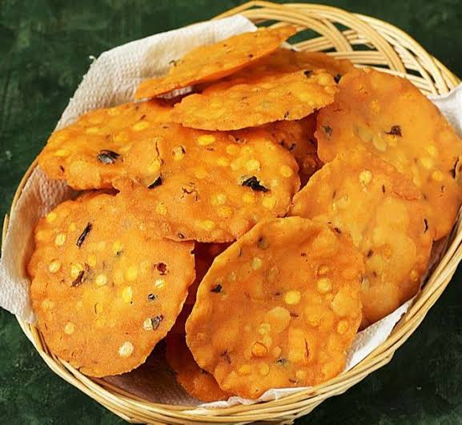
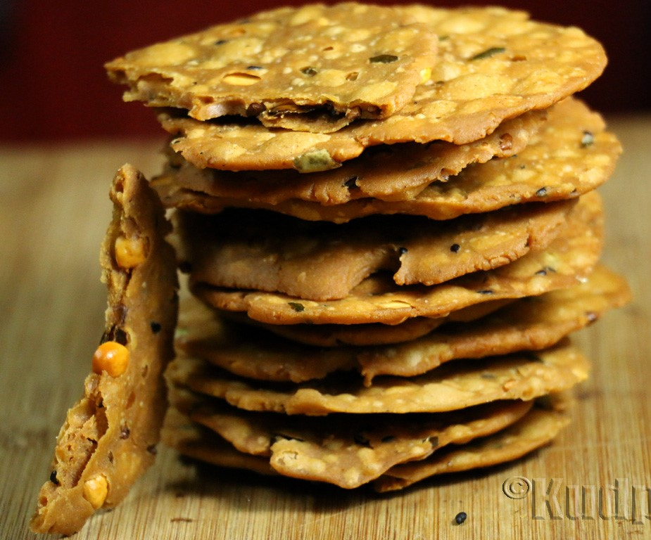

South Indian Recipes
South Indian RecipesBreakfast
Rice items
Sambars and Curry
Sweets
Snacks
 Nippattu, a popular South Indian snack, has a rich history and a distinctive taste that reflects the culinary diversity of the region. Originating from Karnataka, particularly in the Kannada-speaking areas, nippattu has become a beloved crunchy treat enjoyed across South India. Historically, nippattu has its roots in traditional Kannadiga cuisine. The word "nippattu" is derived from the Kannada language, where "nipa" means "to stretch" or "to spread." This aptly describes the preparation method, where the dough is flattened or stretched before being deep-fried to achieve its signature crispiness. The snack is often associated with festive occasions, celebrations, and family gatherings, making it a staple at events like weddings and festivals. The key ingredients of nippattu include rice flour, gram flour (besan), peanuts, roasted gram (pottu kadalai), curry leaves, red chili powder, and a blend of spices. The combination of these ingredients not only imparts a unique flavor to the snack but also contributes to its crunchy texture. The use of various spices, such as cumin and sesame seeds, adds depth and complexity to the taste, creating a perfect balance of savory and spicy notes. Nippattu is known for its versatility, and regional variations may include additional ingredients or slight tweaks to the traditional recipe. Some versions may incorporate ingredients like grated coconut, chopped onions, or even dried fruits for added flavor and texture. The preparation of nippattu involves mixing the ingredients to form a dough, which is then rolled out and cut into small, thin rounds before being deep-fried until golden brown. The result is a delightful snack that can be stored for an extended period, making it a convenient and tasty option for both everyday munching and special occasions. With its deep cultural roots and irresistible taste, nippattu continues to be a cherished snack in South Indian households, bringing people together to savor the rich flavors of this time-honored treat.
